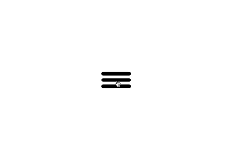
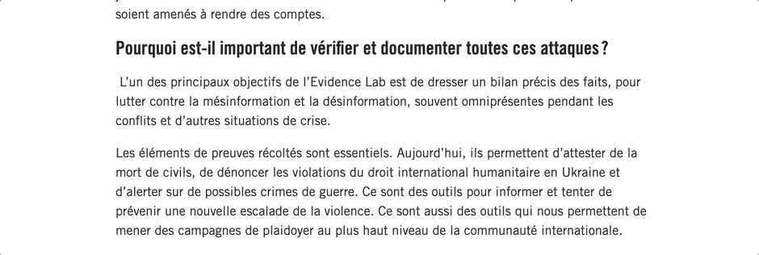
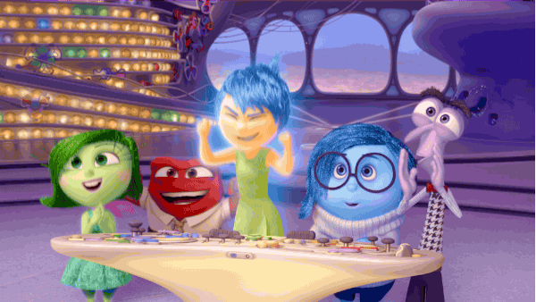

Microinteractions
comment mettre de l'émotion dans mon interface
Brown Bag Lunch @Troopers - 3 mai 2022

Johan Soulet
- Software engineer chez OpenClassrooms

- @johansoulet
Mes interfaces sont fades
🧑🔧
Ce n'est pas un problème "technique"
- Un code est optimisé et respecte les standards
- Des tests unitaires, fonctionnels...
- Des sondes pour alerter et corriger rapidement
- Des couleurs, typo, illu... marchent bien ensemble
- Un design-system pour des composants uniformes
- Un style qui suit les tendances
- Une discovery bien faite
- Des features correspondant aux besoins du marché
- Des retours utilisateurs qui confortent les décisions
- Demande de (très) bonnes skills en CSS
- Prend beaucoup de temps
- Orchestration n'est pas aisée
- Dépriorisé 🗑
- Librairie pour React
- Gérer les changements de layout entre plusieurs états
- Installation dans le projet
- Animation simple
- au chargement (effet scale)
- avec un état initial (effet opacity)
- animation d'une couleur
- Les transitions
- duration, delay, repeat (number ou Infinity)
- type: tween, sprint
- Les variantes
- controlé par un state
- Interactions utilisateur
- whileTap, whileHover
- whileInView
- Orchestration
- Checkbox pour piloter l'affichage
- variants :
container -> y + opacity
text -> opacity
button -> x
- when/staggerChildren/delayChildren
- propriété
custom
👨🎨
Ce n'est pas un problème "design"
🧑🔬
Ce n'est pas un problème "produit"


Emotions
Animations
Microinteractions
Un peu de théorie
Dan Saffer (Product Designer)
Micro-interaction
=
Trigger
+
Animation
🧘♀️
Donner du feedback confirme à l'utilisateur que son action a bien été prise en compte par le système
Donner du feedback ne suffi pas

Donner du feedback ne suffi pas

👨🏫
Expliquer l'interface
🚀
Anticiper la suite
✨
Attirer l'attention
🥰
Créer de l'emotion
👨🏫
Expliquer l'interface
🚀
Anticiper la suite
✨
Attirer l'attention
🥰
Créer de l'emotion

👨🏫
Expliquer l'interface
🚀
Anticiper la suite
✨
Attirer l'attention
🥰
Créer de l'emotion

👨🏫
Expliquer l'interface
🚀
Anticiper la suite
✨
Attirer l'attention
🥰
Créer de l'emotion
👨🏫
Expliquer l'interface
🚀
Anticiper la suite
✨
Attirer l'attention
🥰
Créer de l'emotion
... et on peut même en mélanger plusieurs pour plus de fun
Alien Rating Control, par Darin Senneff
Faire des animations en CSS... la plaie !
Mes interfaces sont fades
...
parce que je suis nul en CSS
Framer-motion
framer-motion
Live coding
Let's get it started
- The Black Eyed Peas
🎉
CodeSandboxMemo
Quelques points de vigilance
🚩 taille du bundle
import { m } from 'framer-motion'
🚩 accessibilité
import { useReducedMotion } from 'framer-motion'
Quelques sujets a creuser
Drag'n'drop
Layout animations
Pilotage des animation à l'aide de hooks
Animations 3D avec TreeJS
Conclusion

Merci 🙌
created with reveal.js